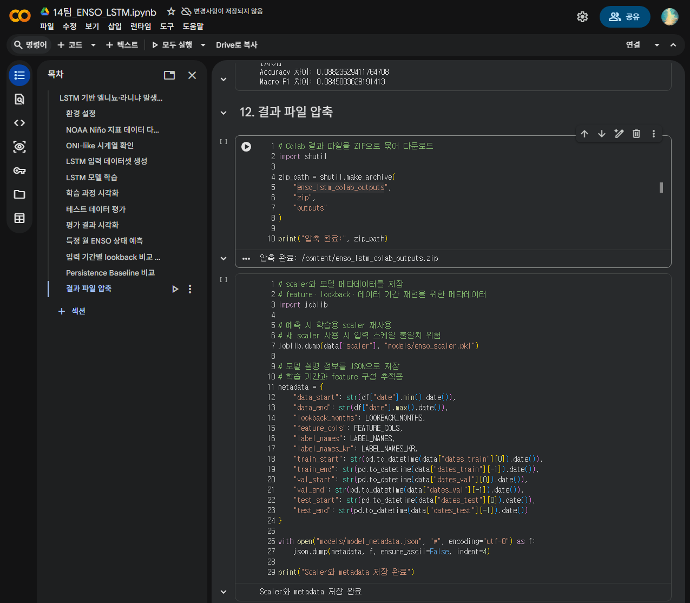
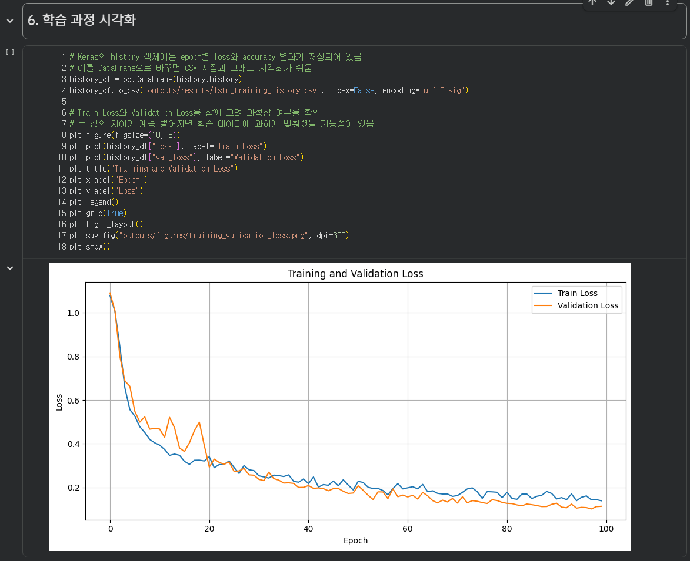
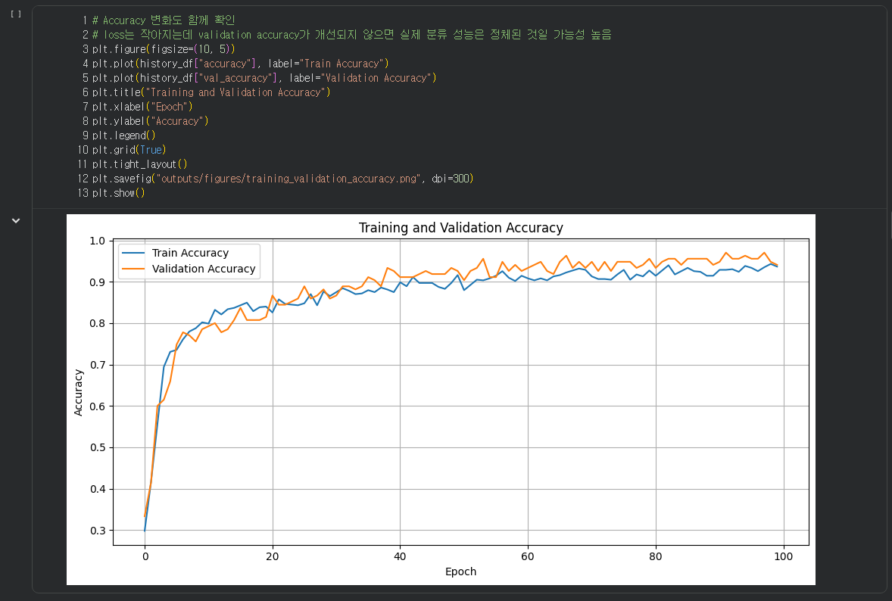
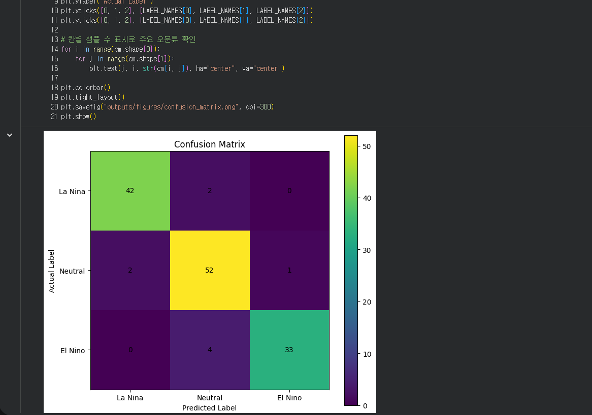
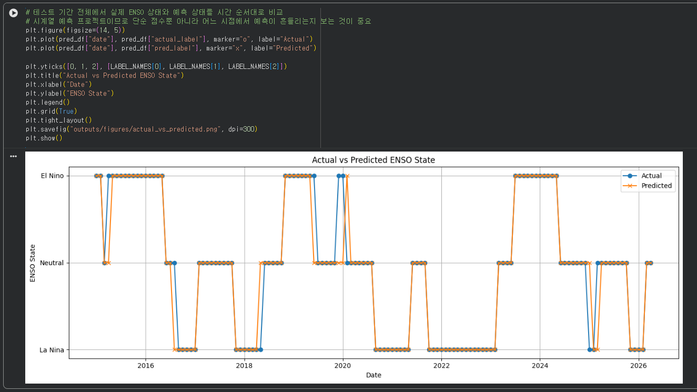
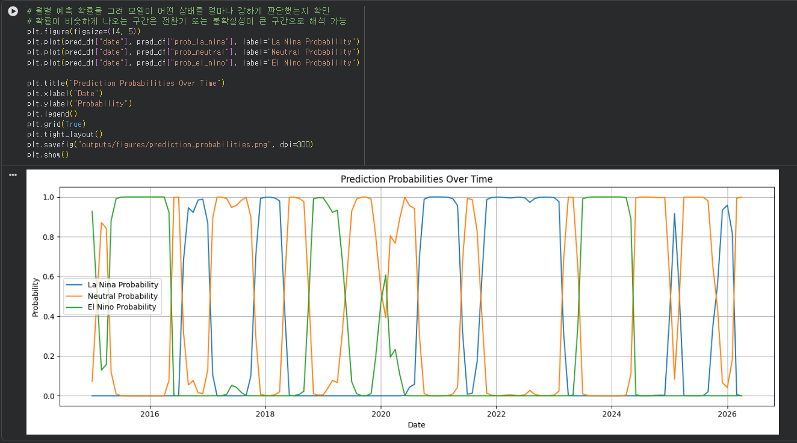
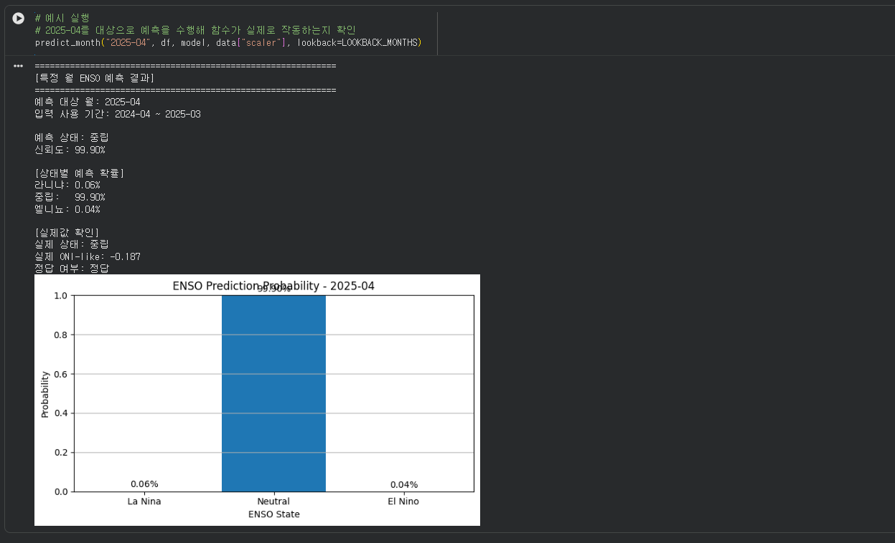
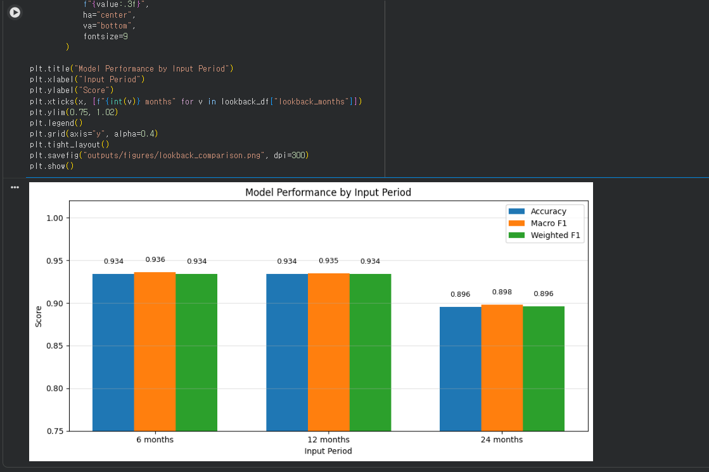
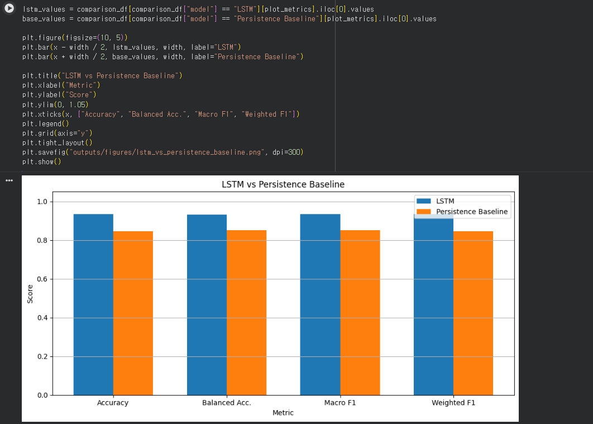
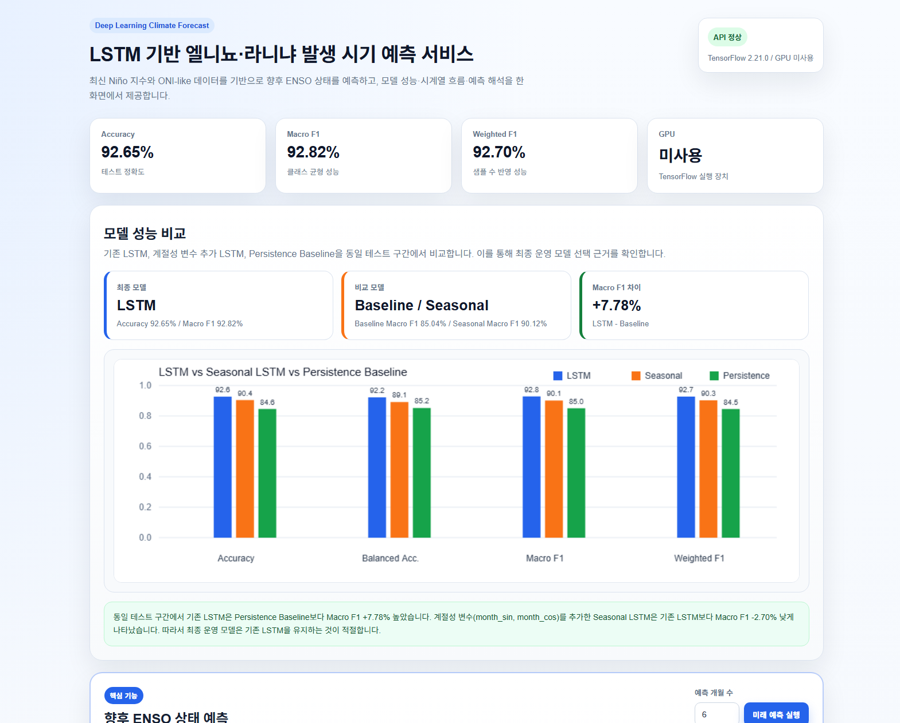

데이터 수집
NOAA에서 제공하는 월별 Niño 지표 데이터를 불러오고 날짜 및 anomaly 값을 정리했습니다.
NOAA Niño 지표 데이터를 활용한 딥러닝 기반 ENSO 상태 예측 프로젝트
본 프로젝트는 NOAA에서 제공하는 월별 Niño 지표 데이터를 기반으로 엘니뇨·중립·라니냐 상태를 예측하는 LSTM 모델을 구현한 프로젝트입니다. 데이터 수집부터 전처리, 모델 학습, 성능 평가, 시각화, baseline 비교까지 전체 흐름을 구성했습니다.
NOAA에서 제공하는 월별 Niño 지표 데이터를 불러오고 날짜 및 anomaly 값을 정리했습니다.
Niño 3.4 anomaly의 3개월 이동평균을 이용하여 ENSO 상태 판단용 ONI-like 지표를 만들었습니다.
과거 ENSO 지표 흐름을 입력으로 사용해 라니냐·중립·엘니뇨 상태를 예측하는 모델을 학습했습니다.
Accuracy, Macro F1-score, Confusion Matrix, 실제값-예측값 그래프로 모델 성능을 평가했습니다.
6개월, 12개월, 24개월 입력 기간을 비교하여 어떤 기간이 예측에 효과적인지 확인했습니다.
Persistence Baseline과 비교하여 LSTM 모델이 단순 상태 지속성 예측보다 나은지 검증했습니다.
데이터 수집부터 웹서비스 확장까지 전체 과정을 단계별로 구성했습니다.
Niño 지표 수집
날짜·변수 정리
3개월 이동평균
시계열 학습
성능·그래프 확인
API·웹서비스
Colab 실행 기준으로 LSTM 모델은 Persistence Baseline보다 높은 성능을 보였습니다.
테스트 데이터 기준 정확도
클래스 균형 성능 지표
Persistence Baseline 기준 성능
LSTM - Baseline
| 모델 | Accuracy | Macro F1 | 해석 |
|---|---|---|---|
| LSTM | 0.9265 | 0.9280 | 시계열 패턴 학습 기반 최종 모델 |
| Persistence Baseline | 0.8456 | 0.8504 | 이전 달 상태가 유지된다고 가정한 기준 모델 |
실제 결과 이미지는 실행 결과 메뉴에 자세히 정리할 예정입니다.
라니냐·중립·엘니뇨 클래스별 예측 결과를 확인했습니다.
테스트 기간 동안 실제 ENSO 상태와 모델 예측 결과를 비교했습니다.
LSTM 모델이 단순 지속성 예측보다 높은 성능을 보이는지 검증했습니다.
Colab에는 핵심 모델 학습 및 분석 코드를 정리했고, GitHub에는 FastAPI 기반 예측 API, 웹 대시보드, Docker 실행 환경을 추가로 구성했습니다. 이를 통해 단순 분석 노트북을 넘어 웹서비스 형태로 확장할 수 있도록 구현했습니다.
본 프로젝트는 기후 시계열 데이터를 활용한 딥러닝 예측 모델 구현을 목표로 하였으며, 데이터 수집부터 전처리, 모델 학습, 성능 평가, 시각화, baseline 비교까지 전체 과정을 직접 수행했습니다. 이를 통해 단순한 모델 구현뿐만 아니라, 모델 결과를 객관적으로 검증하고 해석하는 과정을 경험했습니다.
본 페이지는 LSTM 기반 엘니뇨·라니냐 발생 시기 예측 프로그램을 개발하며 진행한 주제 선정, 기획, 데이터 전처리, 모델 학습, 성능 평가, 웹서비스 확장 과정을 날짜별 개발일지 형식으로 정리한 내용입니다.
딥러닝을 활용할 수 있는 기후·환경 분야 주제를 탐색한 뒤, 엘니뇨와 라니냐 현상이 전 세계 기후, 농업, 수자원, 재난 대응에 영향을 준다는 점에 주목했습니다. 이에 따라 월별 해양 지표 데이터를 활용하여 ENSO 상태를 예측하는 프로젝트를 주제로 선정했습니다.
프로젝트의 필요성, 데이터 수집 방법, 전처리 방식, 모델 구조, 결과 시각화 방식을 정리하며 전체 개발 방향을 설계했습니다. 사용자는 일반 사용자가 아니라 기후 데이터를 해석하는 전문가로 설정하고, 단순 예측 결과뿐만 아니라 성능 지표와 그래프를 함께 제공하는 방향으로 기획했습니다.
NOAA에서 제공하는 ERSST5 기반 월별 Niño 지표 데이터를 확인하고, 프로젝트에 필요한 Niño 1+2, Niño 3, Niño 4, Niño 3.4 anomaly 값을 수집했습니다. 데이터가 월 단위 시계열 구조를 가지므로 LSTM 모델 입력에 적합하다고 판단했습니다.
원본 데이터의 연도와 월 정보를 날짜 형식으로 변환하고, 각 Niño 영역의 anomaly 값을 모델 학습에 사용할 수 있도록 정리했습니다. 이후 Niño 3.4 anomaly의 3개월 이동평균을 계산하여 ONI-like 지표를 생성했습니다.
LSTM 모델이 과거 시점의 흐름을 학습할 수 있도록 lookback 기간을 기준으로 입력 시퀀스를 생성했습니다. 예를 들어 12개월 lookback의 경우, 과거 12개월의 Niño 지표와 ONI-like 값을 이용해 다음 월의 ENSO 상태를 예측하도록 데이터셋을 구성했습니다.
ENSO 데이터의 시간적 흐름을 학습하기 위해 LSTM 기반 3분류 모델을 구현했습니다. 모델은 LSTM 층, Dropout 층, Dense 층으로 구성했으며, 최종 출력층에는 softmax를 사용하여 세 가지 ENSO 상태의 확률을 출력하도록 설계했습니다.
학습된 LSTM 모델을 테스트 데이터에 적용하여 성능을 평가했습니다. 단순 Accuracy만 사용하지 않고, 클래스별 예측 균형을 확인하기 위해 Balanced Accuracy, Macro F1-score, Weighted F1-score를 함께 확인했습니다.
사용자가 특정 월을 입력하면 해당 월 직전 lookback 기간의 데이터를 기반으로 ENSO 상태를 예측하는 기능을 구현했습니다. 예측 결과는 라니냐·중립·엘니뇨 중 하나로 출력되며, 각 클래스별 확률도 함께 확인할 수 있도록 구성했습니다.
입력 기간에 따라 모델 성능이 달라지는지 확인하기 위해 6개월, 12개월, 24개월 lookback을 비교했습니다. 동일한 구조의 LSTM 모델을 각 입력 기간별로 학습하고, Accuracy와 F1-score를 기준으로 성능 차이를 분석했습니다.
LSTM 모델이 단순한 상태 지속성 예측보다 실제로 나은지 확인하기 위해 Persistence Baseline을 구현했습니다. 이 기준 모델은 “이전 달의 ENSO 상태가 다음 달에도 유지된다”고 가정하는 방식입니다.
ENSO 현상에 계절적 패턴이 반영될 가능성을 고려하여 월 정보를 sin, cos 형태로 변환한 계절성 변수를 추가하는 실험을 진행했습니다. 기존 LSTM 모델과 계절성 변수를 추가한 모델을 비교하여 최종 모델 선택의 근거를 마련했습니다.
기존 특정 월 예측은 예측 대상 월 직전의 실제 관측 데이터가 필요하다는 한계가 있었습니다. 이를 보완하기 위해 다음 월의 Niño anomaly feature를 예측하는 별도의 LSTM 회귀 모델을 설계했습니다. 이 구조를 통해 향후 여러 달의 ENSO 상태를 순차적으로 예측할 수 있도록 확장했습니다.
Colab과 Python 스크립트에서만 확인하던 모델 결과를 웹에서 사용할 수 있도록 FastAPI 기반 예측 API를 구현했습니다. 모델, scaler, metadata, 전처리 데이터를 서버 시작 시 로드하고, 예측 결과와 성능 지표를 JSON 형태로 반환하도록 구성했습니다.
예측 결과를 사용자가 쉽게 확인할 수 있도록 HTML, CSS, JavaScript 기반 웹 대시보드를 구현했습니다. 대시보드에는 모델 성능 지표, ONI-like 시계열 그래프, 향후 예측 결과, 특정 월 검증 결과를 한 화면에서 볼 수 있도록 배치했습니다.
모델 학습 속도를 개선하기 위해 WSL Ubuntu 환경에서 TensorFlow GPU 실행 환경을 구성했습니다. GPU 인식 여부를 확인하고, 학습 스크립트와 API 서버가 정상 실행되는지 점검했습니다.
프로젝트를 다른 환경에서도 실행할 수 있도록 Dockerfile과 배포용 requirements 파일을 구성했습니다. 학습은 GPU 환경에서 수행하되, 웹서비스 배포는 추론 부하가 크지 않기 때문에 CPU 기반 Docker 컨테이너로 구성했습니다.
Python 학습 코드, 모델 파일, API 서버 코드, 정적 웹 파일, 결과 파일을 역할별로 정리했습니다. GitHub에 업로드할 파일과 제외할 파일을 구분하고, 추가 구현 내용을 확인할 수 있도록 프로젝트 구조를 정리했습니다.
교수님의 안내에 따라 Colab에는 핵심 모델 학습 및 분석 코드만 포함하도록 정리했습니다. FastAPI, Docker, 웹 대시보드 코드는 Colab에서 제외하고, 데이터 다운로드부터 전처리, LSTM 학습, 평가, lookback 비교, baseline 비교까지 채점 기준에 맞는 흐름으로 구성했습니다.
Colab 실행 결과를 확인하며 그래프의 가독성을 보완했습니다. 특히 lookback 비교 그래프에서 Accuracy, Macro F1, Weighted F1이 겹쳐 보이는 문제를 그룹 막대그래프로 수정하여 결과 차이가 더 명확하게 보이도록 개선했습니다.
프로젝트 수행 과정과 결과를 정리하기 위해 HTML, CSS, JavaScript 기반 오픈포트폴리오 웹페이지를 구성했습니다. 홈, 수행과정, 코드 설명, 실행 결과, 역할 분담, 느낀점, AI 활용보고서 메뉴를 만들고, 우선 홈과 수행과정 페이지를 중심으로 내용을 정리했습니다.
Colab 노트북, GitHub 저장소, 오픈포트폴리오, 실행 결과 캡처를 최종 점검했습니다. 과제 채점 기준에 맞게 Colab에는 핵심 학습 및 분석 코드를 포함하고, 추가 구현인 FastAPI, 웹 대시보드, Docker 환경은 GitHub와 포트폴리오에 정리했습니다.
본 페이지는 프로젝트에서 사용한 핵심 코드를 단계별로 정리한 페이지입니다. 전체 코드를 그대로 나열하기보다, 데이터 수집부터 전처리, LSTM 학습, 평가, 특정 월 예측, 비교 실험, 추가 웹서비스 구현까지의 주요 코드 흐름을 중심으로 설명했습니다.
NOAA Niño 지표 데이터를 불러오고 ONI-like 지표와 라벨을 생성했습니다.
LSTM 입력 시퀀스를 구성하고, ENSO 상태를 3개 클래스로 분류하는 모델을 학습했습니다.
Accuracy, Macro F1, Confusion Matrix, Baseline 비교를 통해 모델 성능을 검증했습니다.
FastAPI, 웹 대시보드, Docker 환경을 추가로 구성하여 모델을 웹서비스로 확장했습니다.
NOAA에서 제공하는 월별 Niño 지표 데이터를 불러오고, 모델 입력에 필요한 컬럼을 정리하는 코드입니다.
원본 텍스트 형태의 NOAA 데이터를 pandas로 불러온 뒤, 연도와 월 정보를 날짜 형식으로 변환하고 각 Niño 영역의 anomaly 값을 feature로 정리합니다.
raw = pd.read_csv(DATA_URL, sep=r"\s+")
df["year"] = raw["YR"].astype(int)
df["month"] = raw["MON"].astype(int)
df["nino12_anom"] = raw["ANOM"].astype(float)
df["nino3_anom"] = raw["ANOM.1"].astype(float)
df["nino4_anom"] = raw["ANOM.2"].astype(float)
df["nino34_anom"] = raw["ANOM.3"].astype(float)
df["date"] = pd.to_datetime(
df["year"].astype(str) + "-" + df["month"].astype(str) + "-01"
)
df = df.sort_values("date").reset_index(drop=True)NOAA 데이터는 연도, 월, Niño 영역별 관측값과 편차값으로 구성되어 있습니다. 이 프로젝트에서는 예측에 필요한 anomaly 값만 추출하여 사용했습니다. 또한 LSTM은 시간 순서가 중요한 모델이므로, 날짜 컬럼을 생성한 뒤 시간순으로 정렬했습니다.
Niño 3.4 anomaly의 3개월 이동평균을 이용해 ENSO 상태 라벨을 생성하는 코드입니다.
연속형 기후 지표를 딥러닝 분류 모델의 정답 라벨로 변환하기 위해 ONI-like 값을 계산하고 라니냐, 중립, 엘니뇨로 분류합니다.
df["oni_like"] = df["nino34_anom"].rolling(window=3).mean()
df = df.dropna().reset_index(drop=True)
def make_label(value):
if value <= -0.5:
return 0
elif value >= 0.5:
return 2
else:
return 1
df["label"] = df["oni_like"].apply(make_label)ONI-like는 Niño 3.4 anomaly의 3개월 이동평균으로 생성했습니다. ONI-like 값이 -0.5 이하이면 라니냐, 0.5 이상이면 엘니뇨, 그 사이 값은 중립으로 라벨링했습니다. 이 과정을 통해 모델이 예측해야 할 정답 클래스를 만들었습니다.
과거 일정 기간의 데이터를 하나의 입력 묶음으로 구성하는 코드입니다.
LSTM이 과거 시점의 흐름을 학습할 수 있도록 lookback 기간만큼의 데이터를 하나의 입력 시퀀스로 변환합니다.
for i in range(lookback, len(df)):
X.append(scaled_features[i - lookback:i])
y.append(labels[i])
dates.append(df.loc[i, "date"])LSTM은 한 달의 값만 보는 것이 아니라 과거 여러 달의 흐름을 입력받아 예측합니다. 예를 들어 lookback이 12개월이면, 과거 12개월의 Niño 지표와 ONI-like 값을 이용해 다음 월의 ENSO 상태를 예측하도록 데이터셋을 구성합니다.
스케일러를 학습 구간에만 fit하여 테스트 데이터 정보가 학습에 섞이지 않도록 처리한 코드입니다.
시계열 예측에서는 미래 데이터 정보가 학습 과정에 포함되면 실제보다 성능이 높게 나올 수 있습니다. 이를 방지하기 위해 학습 구간에 대해서만 스케일러를 학습시켰습니다.
scaler = MinMaxScaler()
scaler.fit(df.loc[:last_train_target_idx - 1, feature_cols])
scaled_features = scaler.transform(df[feature_cols])전체 데이터에 scaler를 fit하면 테스트 구간의 최솟값과 최댓값 정보가 학습 과정에 반영될 수 있습니다. 따라서 학습 구간에 대해서만 fit을 수행하고, 이후 전체 데이터에는 transform만 적용했습니다. 이 처리는 모델 평가의 신뢰성을 높이기 위한 과정입니다.
ENSO 상태를 라니냐·중립·엘니뇨 3개 클래스로 분류하는 LSTM 모델 구조입니다.
월별 기후 시계열의 시간적 패턴을 학습하기 위해 LSTM 층을 사용하고, 최종적으로 3개 ENSO 상태의 확률을 출력하도록 모델을 구성했습니다.
model = Sequential([
Input(shape=input_shape),
LSTM(64, return_sequences=True),
Dropout(0.2),
LSTM(32),
Dropout(0.2),
Dense(32, activation="relu"),
Dense(3, activation="softmax")
])첫 번째 LSTM 층은 시계열의 흐름을 학습하고, 두 번째 LSTM 층은 압축된 시계열 특징을 학습합니다. Dropout은 과적합을 줄이기 위해 사용했습니다. 마지막 Dense 층은 softmax를 사용하여 라니냐, 중립, 엘니뇨에 대한 예측 확률을 출력합니다.
EarlyStopping과 class weight를 적용하여 LSTM 모델을 학습하는 코드입니다.
검증 손실을 기준으로 과도한 학습을 방지하고, 클래스 불균형으로 인해 특정 상태에 편향되지 않도록 class weight를 적용합니다.
early_stop = EarlyStopping(
monitor="val_loss",
patience=15,
restore_best_weights=True
)
history = model.fit(
data["X_train"],
data["y_train"],
validation_data=(data["X_val"], data["y_val"]),
epochs=100,
batch_size=16,
callbacks=[early_stop],
class_weight=class_weight,
verbose=1
)EarlyStopping은 검증 손실이 일정 기간 개선되지 않으면 학습을 중단합니다. 이를 통해 과적합을 줄이고 가장 성능이 좋은 시점의 가중치를 복원합니다. class weight는 라니냐, 중립, 엘니뇨 데이터 수 차이로 인한 편향을 줄이기 위해 사용했습니다.
학습된 모델을 테스트 데이터에 적용하고 다양한 성능 지표를 계산하는 코드입니다.
모델이 테스트 구간에서 얼마나 잘 예측하는지 확인하기 위해 Accuracy뿐 아니라 Balanced Accuracy, Macro F1, Weighted F1을 함께 계산합니다.
y_prob = model.predict(data["X_test"])
y_pred = np.argmax(y_prob, axis=1)
metrics = {
"accuracy": accuracy_score(y_true, y_pred),
"balanced_accuracy": balanced_accuracy_score(y_true, y_pred),
"precision_macro": precision_score(y_true, y_pred, average="macro", zero_division=0),
"recall_macro": recall_score(y_true, y_pred, average="macro", zero_division=0),
"f1_macro": f1_score(y_true, y_pred, average="macro", zero_division=0),
"f1_weighted": f1_score(y_true, y_pred, average="weighted", zero_division=0)
}모델은 각 클래스에 대한 확률을 출력하므로, 가장 높은 확률을 가진 클래스를 최종 예측값으로 선택했습니다. Accuracy는 전체 정답률을 보여주지만, 클래스별 성능 차이를 충분히 설명하지 못할 수 있습니다. 따라서 Macro F1과 Balanced Accuracy를 함께 사용하여 세 클래스가 균형 있게 예측되는지 확인했습니다.
사용자가 입력한 특정 월의 ENSO 상태를 예측하기 위해 직전 lookback 기간을 추출하는 코드입니다.
예측 대상 월의 실제 데이터를 사용하지 않고, 직전 기간의 데이터만 사용하여 실제 예측 상황과 유사한 방식으로 특정 월을 검증합니다.
target_date = pd.to_datetime(target_month + "-01")
input_start = target_date - pd.DateOffset(months=lookback)
input_end = target_date - pd.DateOffset(months=1)
input_df = df[
(df["date"] >= input_start) &
(df["date"] <= input_end)
].copy()예를 들어 2025년 1월을 예측한다면, 2025년 1월의 데이터는 입력으로 사용하지 않습니다. 대신 2024년 1월부터 2024년 12월까지의 데이터를 사용하여 2025년 1월의 상태를 예측합니다. 이 방식은 미래 예측 상황을 가정한 검증 방식입니다.
입력 기간을 6개월, 12개월, 24개월로 바꾸어 모델 성능을 비교하는 코드입니다.
LSTM 모델이 어느 정도 길이의 과거 데이터를 입력받을 때 가장 좋은 성능을 보이는지 확인합니다.
lookback_results = []
for lb in [6, 12, 24]:
result = train_and_evaluate_lookback(df, lb)
lookback_results.append(result)
lookback_df = pd.DataFrame(lookback_results)같은 모델 구조를 사용하더라도 입력 기간이 달라지면 학습되는 시계열 패턴이 달라질 수 있습니다. 따라서 6개월, 12개월, 24개월 lookback을 각각 학습하고, Accuracy와 F1-score를 비교하여 적절한 입력 기간을 확인했습니다.
LSTM 모델이 단순 기준 모델보다 나은지 확인하기 위한 baseline 비교 코드입니다.
ENSO 상태는 일정 기간 지속되는 경향이 있기 때문에, 이전 달 상태가 다음 달에도 유지된다고 가정하는 baseline과 LSTM 모델을 비교했습니다.
prev_date = target_date - pd.DateOffset(months=1)
prev_key = prev_date.strftime("%Y-%m")
baseline_pred = label_lookup[prev_key]Persistence Baseline은 매우 단순하지만, ENSO처럼 상태 지속성이 있는 시계열에서는 꽤 높은 성능을 보일 수 있습니다. 따라서 LSTM 모델이 이 기준 모델보다 높은 성능을 보여야 딥러닝 모델을 사용할 의미가 있습니다. 본 프로젝트에서는 LSTM과 Baseline의 Accuracy 및 Macro F1-score를 비교했습니다.
Colab 핵심 모델 외에, 학습된 모델을 웹에서 사용할 수 있도록 확장한 API 구조입니다.
학습된 LSTM 모델과 scaler를 서버에서 로드하고, 사용자가 웹 화면에서 예측 결과와 성능 지표를 확인할 수 있도록 FastAPI 기반 API를 구성했습니다.
| API | 역할 |
|---|---|
| /health | 서버, 모델, scaler, 데이터 로드 상태 확인 |
| /metrics | LSTM 모델의 성능 지표 반환 |
| /predict | 특정 월 ENSO 상태 예측 |
| /forecast | 향후 여러 달의 ENSO 상태 예측 |
| /model-comparison | LSTM, Seasonal LSTM, Persistence Baseline 성능 비교 |
Colab은 모델 학습과 평가를 위한 채점용 코드로 구성했고, FastAPI와 웹 대시보드는 추가 구현으로 GitHub에 정리했습니다. 이를 통해 모델을 단순 분석 코드에 머무르게 하지 않고, 사용자가 웹 화면에서 예측 결과를 확인할 수 있는 형태로 확장했습니다.
본 페이지는 Colab에서 실행한 LSTM 모델 학습 및 평가 결과, GitHub에 정리한 전체 소스코드, 그리고 추가 구현한 웹 대시보드 실행 화면을 정리한 페이지입니다. 모델 성능 지표, 주요 그래프, 비교 실험 결과를 함께 제시하여 프로젝트 결과를 확인할 수 있도록 구성했습니다.
데이터 다운로드, 전처리, LSTM 학습, 평가, 비교 실험을 실행한 제출용 노트북입니다.
GITHUB GitHub 전체 코드 보기Colab 코드 외에 FastAPI, 웹 대시보드, Docker 설정 파일을 포함한 전체 프로젝트 저장소입니다.
WEB 웹 대시보드 확인FastAPI 기반 예측 API와 연동되는 추가 구현 웹 대시보드입니다. 배포 전이면 GitHub 링크로 대체합니다.
Colab 실행 기준으로 LSTM 모델은 Persistence Baseline보다 높은 Accuracy와 Macro F1-score를 보였습니다.
테스트 데이터 기준 전체 정확도
라니냐·중립·엘니뇨 균형 성능
Persistence Baseline 기준 정확도
단순 지속성 예측 기준 성능
| 모델 | Accuracy | Macro F1 | 설명 |
|---|---|---|---|
| LSTM | 0.9265 | 0.9280 | 과거 Niño 지표와 ONI-like 흐름을 학습한 최종 딥러닝 모델 |
| Persistence Baseline | 0.8456 | 0.8504 | 이전 달 ENSO 상태가 다음 달에도 유지된다고 가정한 기준 모델 |
| 성능 차이 | +0.0809 | +0.0776 | LSTM 모델이 baseline보다 높은 성능을 보임 |
아래 영역에는 Colab 실행 결과에서 생성된 주요 그래프와 출력 화면을 배치합니다.
실제 이미지 파일은 images 폴더에 넣은 뒤 파일명만 맞추면 됩니다.

데이터 다운로드부터 모델 학습, 평가, 결과 압축까지 전체 셀이 정상 실행된 화면입니다.

학습 과정에서 train loss와 validation loss의 변화를 확인하여 과적합 여부를 점검했습니다.

epoch가 진행됨에 따라 학습 정확도와 검증 정확도가 어떻게 변화하는지 확인했습니다.

라니냐, 중립, 엘니뇨 각 클래스별로 실제값과 예측값이 어떻게 분포하는지 확인했습니다.

테스트 기간 동안 실제 ENSO 상태와 LSTM 모델의 예측 결과를 시간 순서대로 비교했습니다.

각 시점에서 라니냐, 중립, 엘니뇨에 대한 모델의 예측 확률 변화를 확인했습니다.

사용자가 입력한 특정 월에 대해 직전 lookback 기간을 활용하여 ENSO 상태를 예측했습니다.

6개월, 12개월, 24개월 입력 기간별 성능을 비교하여 적절한 입력 기간을 분석했습니다.

LSTM 모델이 단순 지속성 기반 baseline보다 높은 성능을 보이는지 비교했습니다.
동일한 LSTM 구조를 사용하되, 입력 기간을 6개월, 12개월, 24개월로 변경하여 성능을 비교했습니다.
| Lookback | Accuracy | Macro F1 | 해석 |
|---|---|---|---|
| 6개월 | 0.9416 | 0.9421 | Colab 실행 기준 가장 높은 성능 |
| 12개월 | 0.9118 | 0.9140 | 장기 흐름을 반영하지만 6개월보다 낮은 성능 |
| 24개월 | 0.8889 | 0.8911 | 입력 기간이 길어지면서 성능이 다소 낮아짐 |
본 Colab 실행 결과에서는 6개월 lookback이 가장 높은 Macro F1-score를 보였습니다. 이는 ENSO 상태 예측에서 너무 긴 과거 입력이 항상 성능 향상으로 이어지는 것은 아니며, 비교 실험을 통해 적절한 입력 기간을 확인해야 함을 보여줍니다.
Colab 제출 코드 외에도 FastAPI 기반 예측 API와 웹 대시보드를 추가로 구현했습니다. 이 부분은 GitHub 저장소와 실행 화면 캡처로 확인할 수 있습니다.

웹 대시보드에서는 모델 성능 지표, ONI-like 시계열 그래프, 향후 예측 결과, 특정 월 검증 결과를 한 화면에서 확인할 수 있도록 구성했습니다.
Colab 실행 후 모델 평가 결과와 그래프 파일을 저장하고, 최종적으로 압축 파일로 정리했습니다.
Accuracy, Balanced Accuracy, Macro F1 등 테스트 성능 지표 저장
라니냐·중립·엘니뇨 클래스별 precision, recall, f1-score 저장
테스트 기간의 실제 라벨, 예측 라벨, 클래스별 예측 확률 저장
클래스별 실제값과 예측값 분포를 시각화한 이미지
6개월, 12개월, 24개월 입력 기간별 성능 비교 그래프
LSTM 모델과 Persistence Baseline 성능 비교 그래프
LSTM 모델은 테스트 데이터에서 Accuracy 0.9265, Macro F1-score 0.9280을 기록했으며, Persistence Baseline보다 높은 성능을 보였습니다. 이를 통해 단순히 이전 달 상태가 유지된다고 가정하는 방식보다, 과거 ENSO 지표의 시계열 패턴을 학습한 LSTM 모델이 더 효과적으로 상태를 예측할 수 있음을 확인했습니다.
또한 lookback 비교 실험을 통해 입력 기간에 따라 모델 성능이 달라질 수 있음을 확인했습니다. 최종적으로 본 프로젝트는 데이터 수집, 전처리, 모델 학습, 평가, 시각화, baseline 비교, 웹서비스 확장까지의 전체 과정을 수행했다는 점에서 딥러닝 기반 시계열 예측 프로젝트로 정리할 수 있습니다.
개인 프로젝트 수행 역할을 정리할 예정입니다.
본 페이지는 LSTM 기반 엘니뇨·라니냐 예측 프로젝트를 진행하며 느낀 점, 어려웠던 부분, 해결 과정, 기술적으로 배운 점, 향후 개선 방향을 정리한 페이지입니다. 단순히 모델을 구현하는 것을 넘어, 데이터 전처리와 평가 기준 설정, baseline 비교의 중요성을 경험했습니다.
이번 프로젝트는 딥러닝 모델을 만드는 것뿐만 아니라, 어떤 데이터를 사용하고, 어떤 기준으로 라벨을 만들며, 어떤 지표로 결과를 평가해야 하는지 고민하는 과정이 중요했습니다.
처음에는 LSTM 모델을 구현하고 정확도를 높이는 것이 프로젝트의 핵심이라고 생각했습니다. 하지만 실제로 진행해보니 모델 구조보다 더 중요한 것은 예측 문제를 어떻게 정의하고, 어떤 데이터를 입력으로 사용하며, 정답 라벨을 어떤 기준으로 만들 것인지 결정하는 과정이었습니다.
엘니뇨와 라니냐는 단순히 한 달의 수치만 보고 판단하기 어렵기 때문에, Niño 3.4 anomaly의 3개월 이동평균을 활용해 ONI-like 지표를 만들고, 이를 기준으로 라니냐·중립·엘니뇨를 구분했습니다. 이 과정에서 딥러닝 모델의 성능은 모델 자체뿐만 아니라 데이터 전처리와 문제 설정에 크게 영향을 받는다는 것을 알게 되었습니다.
시계열 데이터는 시간 순서가 유지되어야 하며, 학습 데이터와 테스트 데이터를 무작위로 섞으면 미래 정보가 학습에 포함될 수 있다는 점을 배웠습니다. 따라서 데이터를 시간 순서대로 나누고, scaler도 학습 구간에만 fit하여 데이터 누수를 방지했습니다.
처음에는 Accuracy가 높으면 모델 성능이 좋다고 판단할 수 있을 것이라 생각했습니다. 하지만 라니냐, 중립, 엘니뇨처럼 여러 클래스가 있는 문제에서는 특정 클래스에만 잘 맞아도 Accuracy가 높게 나올 수 있습니다. 그래서 Macro F1-score, Balanced Accuracy, Confusion Matrix를 함께 확인해야 한다는 점을 배웠습니다.
LSTM 모델의 성능이 높게 나와도, 그것이 실제로 의미 있는 성능인지 판단하려면 기준 모델이 필요했습니다. ENSO 상태는 지속성이 강하기 때문에 이전 달 상태를 다음 달 예측값으로 사용하는 Persistence Baseline을 구현했고, LSTM이 이 baseline보다 나은지 비교했습니다.
예측 확률이 높다고 해서 항상 실제 기후 현상을 완벽하게 설명하는 것은 아니라는 점을 알게 되었습니다. 딥러닝 모델은 데이터 패턴을 기반으로 예측하지만, 기후 현상은 다양한 외부 요인의 영향을 받기 때문에 결과를 해석할 때 신중해야 한다고 느꼈습니다.
원본 데이터는 연속적인 anomaly 값으로 제공되기 때문에, 이를 바로 분류 모델의 정답으로 사용할 수 없었습니다. 이를 해결하기 위해 Niño 3.4 anomaly의 3개월 이동평균을 ONI-like 지표로 만들고, -0.5 이하를 라니냐, 0.5 이상을 엘니뇨, 그 사이를 중립으로 라벨링했습니다.
특정 월 예측 기능은 예측 대상 월 직전 lookback 기간의 실제 데이터가 있어야 동작했습니다. 그래서 현재 데이터 이후의 미래를 예측하려면 추가 구조가 필요했습니다. 이를 보완하기 위해 Niño anomaly feature를 먼저 예측하고, 그 결과를 ENSO 분류 모델에 연결하는 Feature Forecaster 구조를 추가로 설계했습니다.
Lookback 비교 그래프에서 Accuracy, Macro F1, Weighted F1 값이 비슷해 선 그래프가 겹쳐 보이는 문제가 있었습니다. 이를 해결하기 위해 선 그래프 대신 그룹 막대그래프로 수정하여 각 입력 기간별 성능 차이가 더 명확하게 보이도록 개선했습니다.
프로젝트를 진행하면서 FastAPI, 웹 대시보드, Docker까지 확장했지만, 교수님의 안내에 따라 Colab에는 핵심 학습 및 분석 코드만 포함하는 것이 적절하다고 판단했습니다. 따라서 Colab은 채점용 핵심 코드로 정리하고, 웹서비스와 Docker 코드는 GitHub에 추가 구현으로 분리했습니다.
데이터 수집부터 LSTM 입력 시퀀스 생성, 학습, 평가까지 전체 과정을 직접 구현했습니다.
Accuracy뿐만 아니라 Macro F1, Balanced Accuracy, Confusion Matrix를 함께 확인하는 습관을 얻었습니다.
Lookback 비교와 Persistence Baseline 비교를 통해 모델 성능을 객관적으로 검증했습니다.
학습된 모델을 FastAPI와 웹 대시보드로 연결하여 사용자가 결과를 확인할 수 있는 형태로 확장했습니다.
해수면 온도 편차뿐만 아니라 대기압, 무역풍, 강수량 등 ENSO와 관련된 변수를 추가하면 예측 성능과 해석력을 개선할 수 있을 것으로 판단됩니다.
LSTM 외에도 GRU, 1D-CNN, Transformer 기반 시계열 모델을 추가로 실험하여 어떤 모델이 ENSO 상태 예측에 더 적합한지 비교할 수 있습니다.
Feature Forecaster를 활용한 다중 시점 예측에서는 예측이 반복될수록 오차가 누적될 수 있습니다. 이를 줄이기 위해 uncertainty 표현이나 앙상블 예측 방식을 추가할 수 있습니다.
사용자가 예측 기간, 입력 기간, 모델 종류를 선택하고 결과를 비교할 수 있도록 웹 대시보드의 조작 기능을 더 확장할 수 있습니다.
이번 프로젝트를 통해 딥러닝 모델 구현은 단순히 코드를 작성하는 일이 아니라, 데이터를 이해하고, 문제를 명확히 정의하고, 결과를 객관적으로 검증하는 과정이라는 것을 알게 되었습니다. 특히 baseline과 비교하지 않으면 모델 성능이 실제로 의미 있는지 판단하기 어렵다는 점을 배웠습니다.
또한 Colab에서 모델을 학습하고 평가하는 것에서 끝내지 않고, FastAPI와 웹 대시보드, Docker 환경까지 확장하면서 딥러닝 모델을 실제 서비스 형태로 연결하는 과정을 경험했습니다. 이 과정에서 모델 개발과 소프트웨어 구현이 함께 이루어져야 사용자가 결과를 이해하고 활용할 수 있다는 점을 느꼈습니다.
본 페이지는 프로젝트를 진행하면서 생성형 AI를 어떤 목적으로 활용했는지, 어떤 부분에서 도움을 받았는지, 그리고 최종적으로 직접 판단하고 수정한 부분은 무엇인지 정리한 보고서입니다. AI는 코드 작성과 문서 정리의 보조 도구로 활용했으며, 데이터 실행, 오류 확인, 결과 해석, 최종 제출 판단은 직접 수행했습니다.
본 프로젝트에서는 ChatGPT를 활용하여 프로젝트 구조 정리, 코드 오류 해결 방향 검토, 문서 표현 보완, 포트폴리오 구성 정리에 도움을 받았습니다. 다만 AI가 제안한 내용을 그대로 사용하지 않고, 실제 실행 결과와 프로젝트 목적에 맞게 직접 검토하고 수정했습니다.
ChatGPT
코드 구조화, 오류 해결, 문서 정리, 포트폴리오 구성 보조
데이터 전처리, LSTM 모델 구현, 평가 지표 정리, 웹서비스 확장 방향 검토
실행 결과 확인, 모델 선택, 성능 해석, 제출 구성은 직접 수행
프로젝트를 진행하면서 데이터 전처리, LSTM 모델 구성, 성능 평가, FastAPI 웹서비스 확장 등 여러 단계가 필요했습니다. 이 과정에서 AI를 활용하여 코드 구조를 정리하고, 오류가 발생했을 때 원인을 추정하며, 결과를 어떻게 해석하면 좋을지 검토했습니다.
특히 Colab 제출용 코드와 GitHub 추가 구현 코드를 분리하는 과정에서, 어떤 내용을 채점용 노트북에 포함하고 어떤 내용을 추가 구현으로 정리해야 하는지 판단하는 데 도움을 받았습니다. 하지만 실제 코드 실행, 결과 확인, 성능 수치 판단, 최종 파일 구성은 직접 수행했습니다.
엘니뇨·라니냐 예측 프로젝트의 전체 흐름을 정리하고, 데이터 수집, 전처리, 모델 학습, 결과 시각화 방식에 대한 기획 구조를 잡는 데 AI를 활용했습니다.
NOAA 원본 데이터에서 필요한 컬럼을 추출하고, ONI-like 지표를 생성한 뒤 라니냐·중립·엘니뇨 라벨을 만드는 코드 구조를 정리하는 데 도움을 받았습니다.
LSTM 입력 시퀀스 구성, 모델 구조 설계, EarlyStopping 적용, class weight 적용 등 모델 학습 코드의 흐름을 구성하는 데 AI의 도움을 받았습니다.
Accuracy만으로 모델을 평가하는 한계를 보완하기 위해 Macro F1-score, Balanced Accuracy, Confusion Matrix 등을 함께 사용하는 방향을 정리했습니다. 또한 Persistence Baseline 비교와 lookback 비교 실험 구성을 검토했습니다.
Colab, WSL, Docker, FastAPI 실행 과정에서 발생한 오류 메시지를 바탕으로 원인 후보를 정리하고 해결 순서를 잡는 데 AI를 활용했습니다.
추가 구현으로 FastAPI API, 웹 대시보드, Docker 실행 환경을 구성하고, 오픈포트폴리오에 들어갈 메뉴와 내용을 정리하는 데 AI를 활용했습니다.
| 구분 | AI 도움을 받은 부분 | 직접 수행한 부분 |
|---|---|---|
| 기획 | 기획서 구조, 프로젝트 흐름, 설명 문장 정리 | 주제 선정, 프로젝트 방향 결정, 사용자 대상 설정 |
| 데이터 처리 | 전처리 코드 구조와 라벨링 기준 설명 보완 | Colab에서 데이터 다운로드, 실행 결과 확인, 전처리 결과 검토 |
| 모델 구현 | LSTM 코드 구조, EarlyStopping, class weight 적용 방향 검토 | 모델 학습 실행, 성능 결과 확인, 최종 모델 구성 판단 |
| 평가 | 평가 지표 의미, baseline 비교 방식 정리 | 실제 성능 수치 확인, 그래프 출력, 결과 해석 작성 |
| 오류 해결 | 오류 메시지 원인 분석과 해결 순서 제안 | 명령어 실행, 환경 설정 변경, 정상 동작 여부 확인 |
| 웹서비스 | FastAPI, Docker, 포트폴리오 코드 구조 정리 | 로컬 실행 확인, Docker 빌드 테스트, 제출 자료 구성 |
| 문서화 | 문장 다듬기, 메뉴 구성, 보고서 초안 작성 보조 | 프로젝트 내용 반영, 최종 문구 선택, 제출 형식 정리 |
AI가 제안한 코드는 Colab, WSL, 로컬 Docker 환경에서 직접 실행하여 오류 여부를 확인했습니다. 실행되지 않는 코드는 수정하거나 프로젝트 상황에 맞게 제외했습니다.
성능 지표는 AI가 임의로 작성한 값이 아니라, 실제 Colab 실행 결과에서 출력된 Accuracy, Macro F1-score, Baseline 결과를 기준으로 정리했습니다.
AI가 제안한 기능이나 문장이 프로젝트 목적과 맞지 않는 경우 수정했습니다. 특히 Colab에는 핵심 학습 코드만 포함하고, 웹서비스 코드는 GitHub 추가 구현으로 분리했습니다.
AI가 작성한 문장을 그대로 사용하지 않고, 실제 수행 과정과 결과에 맞게 문장 표현을 수정했습니다. 과장된 표현은 줄이고, 직접 확인한 내용 중심으로 정리했습니다.
AI가 제안한 코드와 문장은 실제 실행 결과와 프로젝트 상황에 맞게 수정한 뒤 사용했습니다.
모델 성능과 그래프 해석은 AI의 설명이 아니라 Colab 실행 결과를 기준으로 작성했습니다.
Colab에는 핵심 모델 학습 코드를 넣고, FastAPI와 Docker는 GitHub 추가 구현으로 분리했습니다.
설명할 수 없는 코드는 제외하거나 다시 확인했고, 코드 설명은 직접 이해한 범위에서 정리했습니다.
본 프로젝트는 개인 프로젝트로 진행되었으며, 데이터 실행, 모델 학습, 결과 확인, 성능 비교, 최종 제출 자료 정리는 직접 수행했습니다. AI는 코드 구조 정리, 오류 원인 검토, 문서 표현 보완에 도움을 주는 보조 도구로 활용했습니다.
특히 최종 Colab 노트북에 어떤 코드를 포함할지, GitHub에 어떤 추가 구현을 정리할지, 포트폴리오에서 어떤 결과를 강조할지는 직접 판단했습니다. 따라서 AI는 개발 과정의 참고 도구였으며, 최종 결과물에 대한 책임과 판단은 본인이 수행했습니다.
본 프로젝트에서 AI는 개발과 문서화의 보조 도구로 활용되었습니다. AI를 통해 코드 구조를 더 빠르게 정리하고, 오류 해결 방향을 검토하며, 포트폴리오와 보고서 문장을 체계화할 수 있었습니다.
그러나 AI가 제시한 결과를 그대로 제출하지 않고, 실제 Colab 실행 결과, 모델 성능 지표, 그래프 출력, 웹서비스 동작 여부를 직접 확인했습니다. 이를 통해 AI를 단순한 답안 생성 도구가 아니라, 프로젝트 완성도를 높이기 위한 검토 및 보조 도구로 활용했습니다.